数据结构与算法分析线性表:环形链表时间复杂度二叉树二叉树的遍历完全二叉树二叉树的平衡问题平台及实施的侧重点功能的抽象画提取接口规范制定标准中台服务的拆分与聚合缓存、并发与可用三方平台接入与封装其他问题、安全、异构面试题
###
数组--物理结构
- 连续的地址空间
- 保存的是首地址，找第100个数据的位置（首地址+100*基本类型占用大小）
链表--物理结构
- 跳跃的地址空间(只能一个一个访问,)
栈--逻辑结构
队列--逻辑结构
| 单项链表的添加元素 |
|---|
| 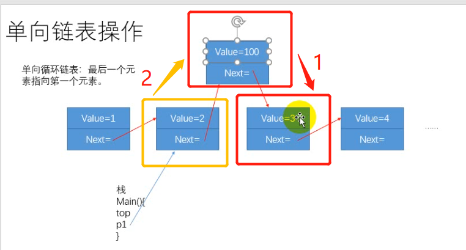 |
| 要先将新元素指向下一个元素 |
1.如何判断链表是否有环
快慢指针
2.环的切入点在哪
当快慢指针重合后，两个指针都变为满指针，将一个指针回到起点。另一个指针继续向前，重合的位置即为环的切入点
3.环的大小
4.链表的元素总个数
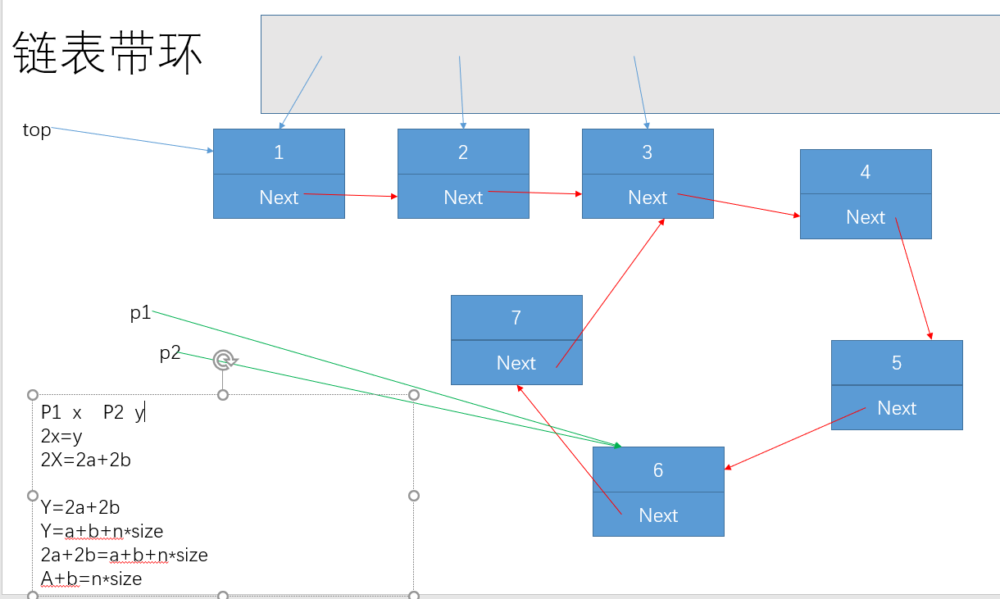
事件复杂度和时间没有关系
找一个g（n）使得当n->∞ 时，f(n)/g(n) = c c是非零常数
我们就记O(g(n))为时间复杂度
树是由节点构成，也可以没有节点，空树
最底端游一个根节点，是特殊节点，整棵树只有一个根节点，从根节点触发，每个节点都可以有多个子节点
当一个节点没有子节点的情况下，称为叶子节点
树的深度：树有多少层
二叉树
- 每个节点至多有两个子节点的树
二叉查找树 二叉搜索树 二叉排序树
- 每个节点而言，左边的永远比父节点小，右边的用永远比父节点打
| 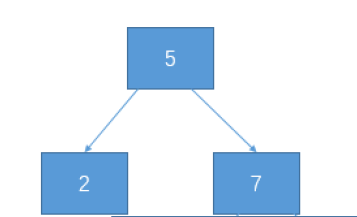 |
| 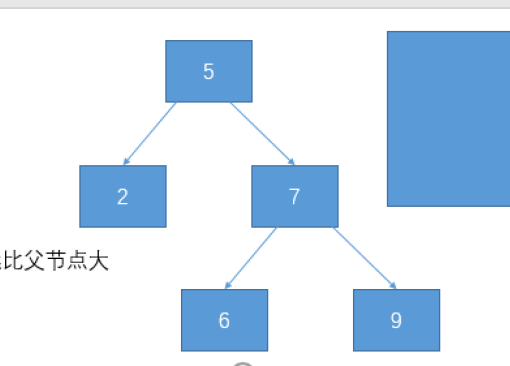 |
二叉树的遍历
中序遍历是有序的
根 左孩子 右孩子
- 先序遍历（先根遍历）：5 2 7 、、5 2 7 6 9
- 中序遍历（中根遍历）：2 5 7 、、2 5 6 7 9
- 后序遍历（后根遍历）：2 7 5 、、2 6 9 7 5
满二叉树 完全二叉树
满二叉树
- 深度为K且节点个数为2^K -1
- 二叉树结点尽可能最大
一颗满二叉树，节点数为n，深度为？
2^k -1 = n
2^k = n+1
k=log(n+1)
| 从跟开始逐层从左至右标号 |
|---|
| 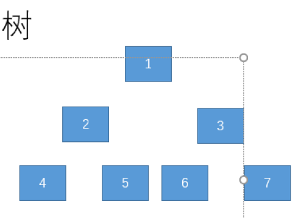 |
完全二叉树
给一颗满二叉树，从跟开始逐层从左至右标号，在满二叉树的基础上，删去编号最后高的节点，就得到一颗完全二叉树，在完全二叉树的基础上，删去编号最高的阶段，也可以的得到一颗完全二叉树
问题：
一颗完全二叉树，深度为K，她至少有多少个叶子节点
K-1的满二叉树
2^(k-2)
二叉树的平衡问题
追求平衡是为了减少查找次数
时间复杂度 log（n）
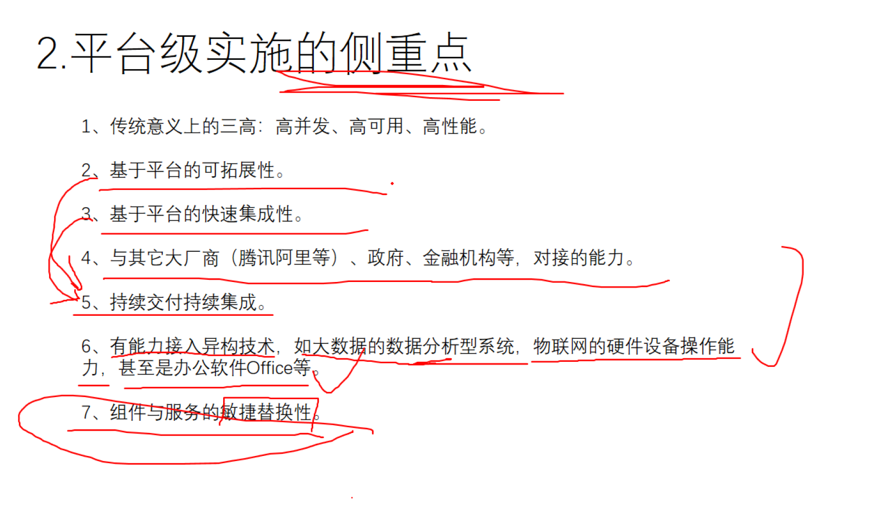
平台及实施的侧重点
高并发
集群、负载均衡、MQ
高可用
一直可以用
如何保证能高可用？--IP飘逸 （就像搬家）
高性能
响应时间（网络层面、IO层面、数据库层面
基于平台的可拓展性
第一需求、第二需求。。。。扩展时不影响以前代码
基于平台的快速集成
持续交付，持续集成
交付后可以用行了，再继续开发别的功能
与其他大厂等的对接能力
组建于服务的敏捷替换
对技术进行封装，封装成JVM，要用就调用接口。这样要换技术时不至于影响接口以外的
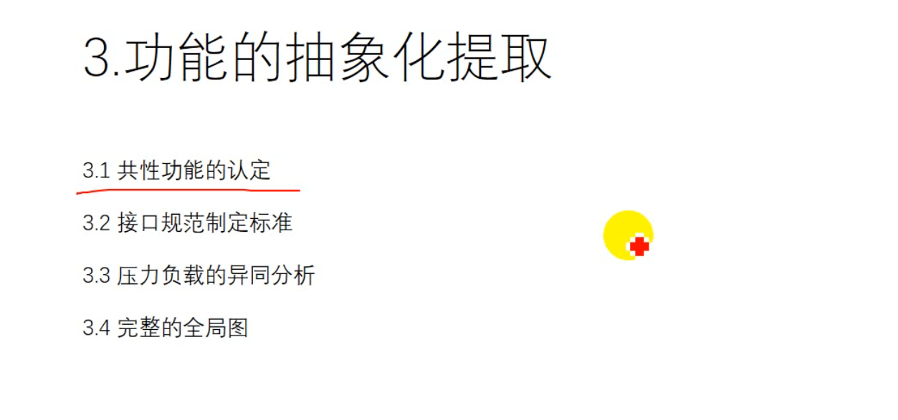
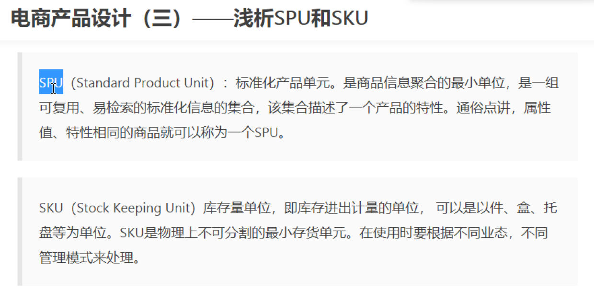
展示SPU，减库存减的是SKU。一个SPU可以对应多个SKU。
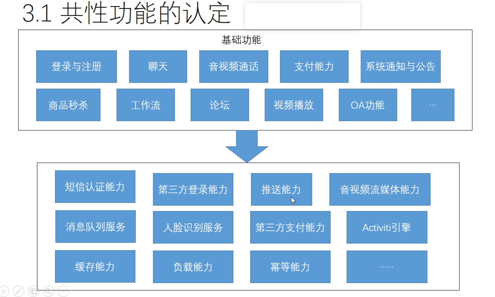
什么叫共性功能，所有共有的功能抽象出来，注册的时候会用到短信的功能，聊天支付等都会用到短信验证，
数据拉去，服务器推送数据
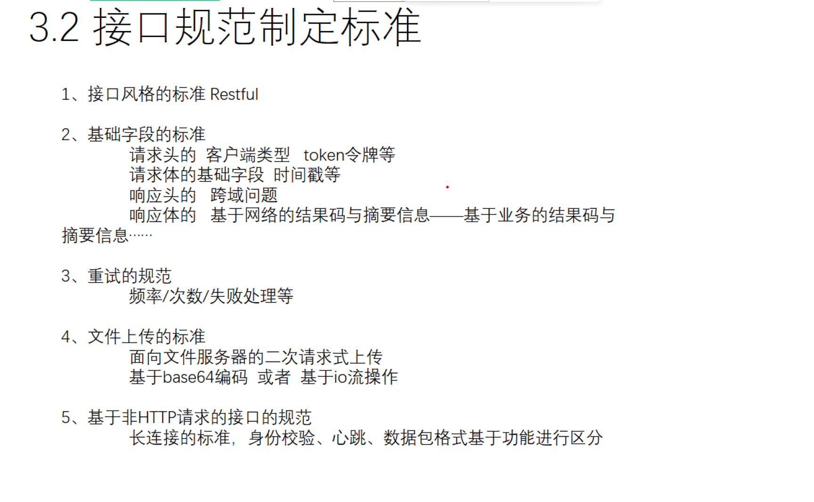
接口规范指定标准
接口风格的标准Restful
- 子服务不解决这问题，应该是网管解决
基础字段的标准
- 请求头
- 请求体
- 响应头
- 响应体
重试的规范
- 频率--每隔一定时间调用一次
- 次数
- 失败处理--返回拖地数据等
文件上传的标准
面向文件服务器的二次请求时上传
- 用户选择上传文件的时候，视频已经开始上传，返回个url，再次用户点击上传
基于base64编码或者IO流操作
基于非HTTP请求的接口规范
- 长廉价的标准身份校验，心跳（定时联系，确保还活着），数据包格式基于功能进行区分
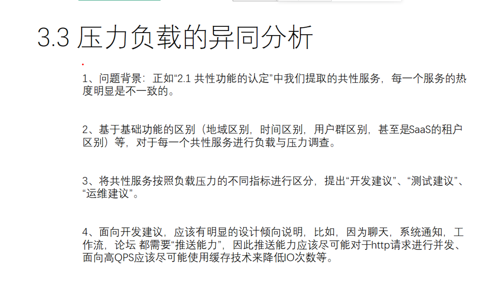
服务的热度指的是不是并发量。如：微信聊天共功能一直处于高并发。·修改微信号不属于（需要批处理，耗资源）
基于基础功能的区别。。。如：不同地区在运维的时候部署服务器的数量有区别，应用在不同时间的热度也不同（动态运维、、定时的有哦策略的部署集群，涉及到ip地址】内存等等的问题）Iaas Paas Saas Faas
IaaS Infrastructure as a Service 基础架构即服务 PaaS Platform as a Service 平台即服务 SaaS Software as a Service 软件即服务 BaaS Backend as a Service 后端云服务 FaaS Function as a Service 函数计算即服务
基础设施级服务
- 他人提供厨房、炉子、煤气，你使用这些基础设施，来烤你的披萨。
平台即服务
- 除了方案一的基础设施，他人还提供披萨饼皮。你只要把自己的配料洒在饼皮上，让他帮你烤出来就行了。也就是说，你要做的就是设计披萨的味道（海鲜披萨或者鸡肉披萨），他人提供平台服务，让你把自己的设计实现。
软件即服务
- 他人直接做好了披萨，不用你的介入，到手的就是一个成品。你要做的就是把它卖出去，最多再包装一下，印上你自己的 Logo。
后端云服务
- 服务商为客户(开发者)提供整合云后端的服务，如提供文件存储、数据存储、推送服务、身份验证服务等功能，以帮助开发者快速开发应用。
函数即服务
- 无服务器计算，当前使用最广泛的是AWS的Lambada。
- 服务商提供一个平台，允许客户开发、运行和管理应用程序功能，而无需构建和维护通常与开发和启动应用程序相关的基础架构的复杂性。 按照此模型构建应用程序是实现“无服务器”体系结构的一种方式，通常在构建微服务应用程序时使用。
将共性服务按照负载压力的不同指标进行区分，技术开发、测试、运维建议 可以不做，但是一定要说，
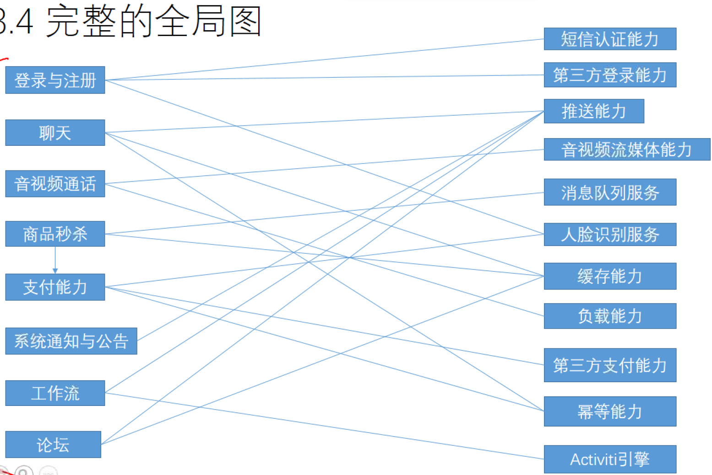
左边的是业务子服务，右边的是基础能力子服务
后台的能力抽取出来组合 能够组成想要的子服务 这就叫技术中台
作为服务开发的时候，把这些搞一遍，想有要什么功能都能根据这些搞出来
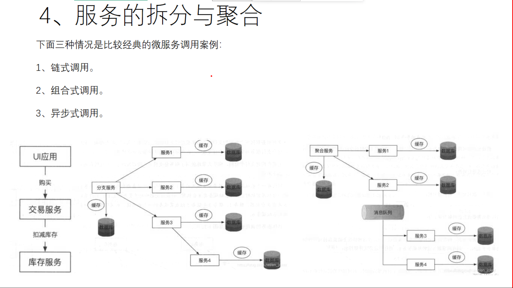
链式调用
A调用B B调用C 时间就是t1+t2
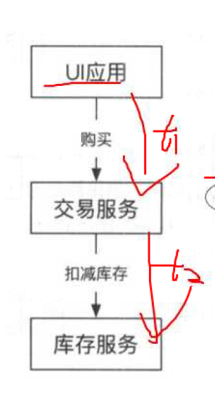
组合式调用
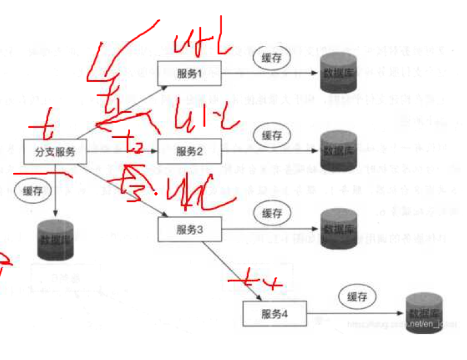
CountdownLatch
CountDownLatch概念
CountDownLatch是一个同步工具类，用来协调多个线程之间的同步，或者说起到线程之间的通信（而不是用作互斥的作用）。
CountDownLatch能够使一个线程在等待另外一些线程完成各自工作之后，再继续执行。使用一个计数器进行实现。计数器初始值为线程的数量。当每一个线程完成自己任务后，计数器的值就会减一。当计数器的值为0时，表示所有的线程都已经完成一些任务，然后在CountDownLatch上等待的线程就可以恢复执行接下来的任务。
单个服务调用多个服务时
异步试调用
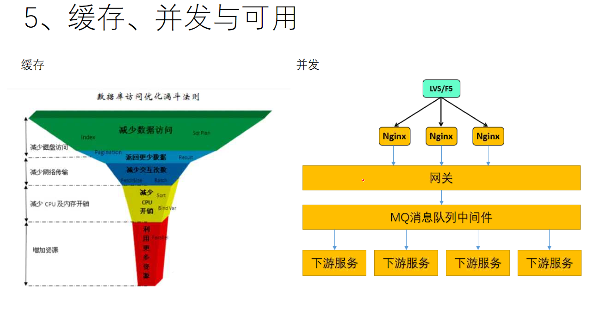
内存型数据库
数据库访问优化漏斗法则
没有IO
首先减少磁盘访问，减少网络传输
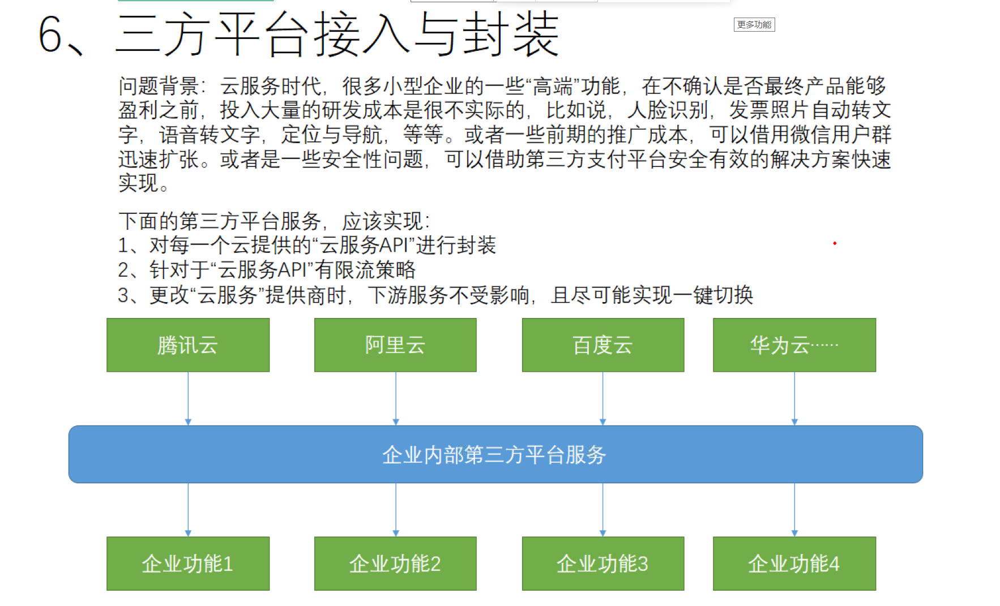
将三方服务隔离在业务之外，对第三方服务进行封装
适合小企业刚开始做的时候
对云服务API进行封装
- 调用之前先制定一系列的规范，入参、出参等。。根据接口写实现类
针对云服务API有限流策略
- 使用的第三方接口使用时涉及到的费用等，节约成本，进行适当的限流
云服务尽可能实现一键切换
第三方服务的隔离，部件坏了平台不受影响
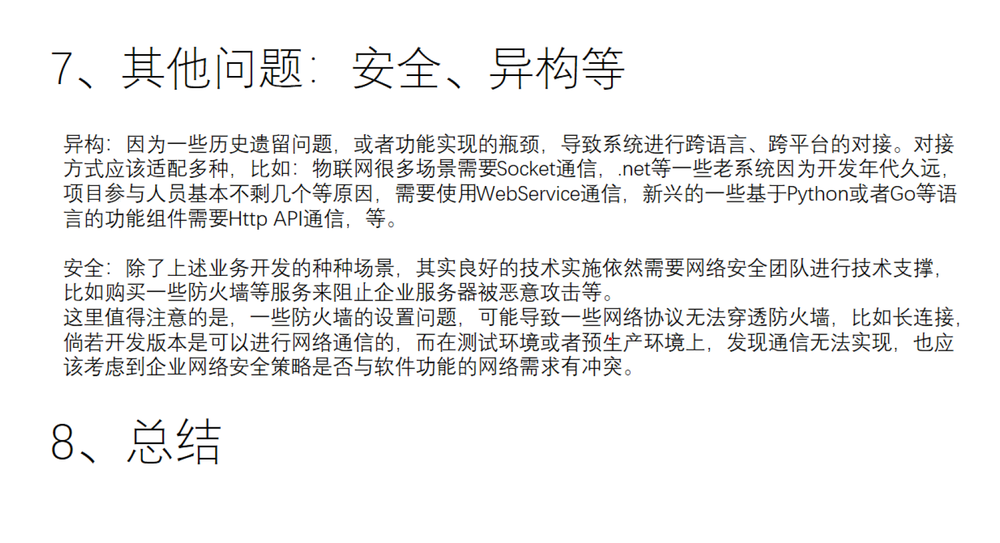
异构穷则搁置争议，达则自古以来
java和C 对接 有JNI
java可以完美的和C C++放一起完美的组合
HTTP API 传输json
DDOS攻击 数据流攻击
肉鸡：被黑客控制的傀儡电脑
中间人攻击
fidder2
抓包工具
电脑加网线，打开WIFI，，
奶瓶系统，黑客工具，包含各种密码碰撞，wifi密码暴力破解
如何防止被别人抓包呢？用https协议，能抓到，但是乱码，要解开需要密钥
非对称加密 当前主流RSA
若开发版本可以通信，测试环境或预生产环境无法网络通信，则可能是网络安全策略与网络需求有冲突
开发环境、测试环境，·预生产环境，生产环境
- 开发环境和测试环境的数据库不一样导致数据在初始化时某些数据没读取到
- 网络环境不一致。。开发环境、测试环境等是4套环境，每个都是单独一套
封装、单例、减少沟通成本
快速证明自己没有责任
单例模式、工厂模式、构建者模式。。对象创建的构建模式。。。最后一个个在属性特别多的时候使用。倒数第二个
classloader
单例模式